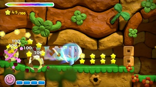

Kirby and the Rainbow Curse Review
by Dan Ryckert on February 18, 2015
Ten years later, this frustrating follow-up to Canvas Curse feels shallow and soulless by comparison.

In 2005, owners of the Nintendo DS were waiting for a game that demonstrated the benefit of a dual-screen portable with a touchscreen. The handheld had been out for seven months, and many of its titles were ports (Super Mario 64 DS) or collections of minigames (WarioWare: Touched!, Feel the Magic XY/XX). Nintendo hadn't yet sold anyone on the notion that we needed a touchscreen-based handheld. The star dash is one of the few special abilities that Kirby has access to.
Kirby: Canvas Curse came along in June, and was the first to really deliver on that promise. Its gameplay was simple, requiring players to draw paths on the touchscreen for Kirby to follow. Navigating the levels wasn’t a complex procedure, but it nonetheless felt like a unique experience that was custom-made for the DS (this is before the iPhone and iPad made touch-controlled games commonplace). I had a great time with the game, and I certainly wasn’t alone. It’s widely regarded as one of the best early titles in the DS library.
Almost a decade later, Kirby and the Rainbow Curse revives the format for the Wii U. While the touchscreen gameplay is intact and it features a gorgeous clay-based art style, the experience of actually playing it is a far cry from those early DS days.
0 comments
Be the first to leave a comment!